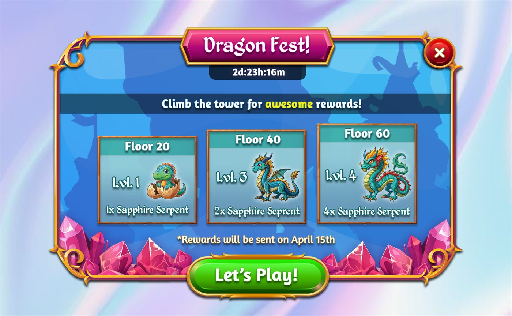
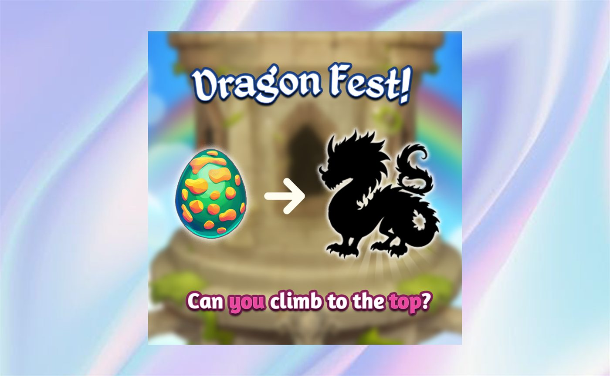

Dragon Fest
A limited-time event concept, taken past the pop-up. The event screen and its offer, plus the two surfaces that have to reach a player who isn’t currently in the game — a rich push notification and a social post.
4 surfaces
One event, four surfaces
The event runs across escalating floors — 20, 40 and 60 — each one harder than the last and each paying out its own rewards. The deal screen sells the way through: dragon eggs and diamonds, bought to keep climbing.
An event only works if it looks like the same event everywhere it appears. The in-game pop-up, the deal screen, the push notification and the social post were designed as one set — same dragon, same palette, same promise — with each one reworked for the space it actually gets rather than cropped down from the largest.
-

Event pop-up
-
Offer screen
-
Push notification
-

Social post